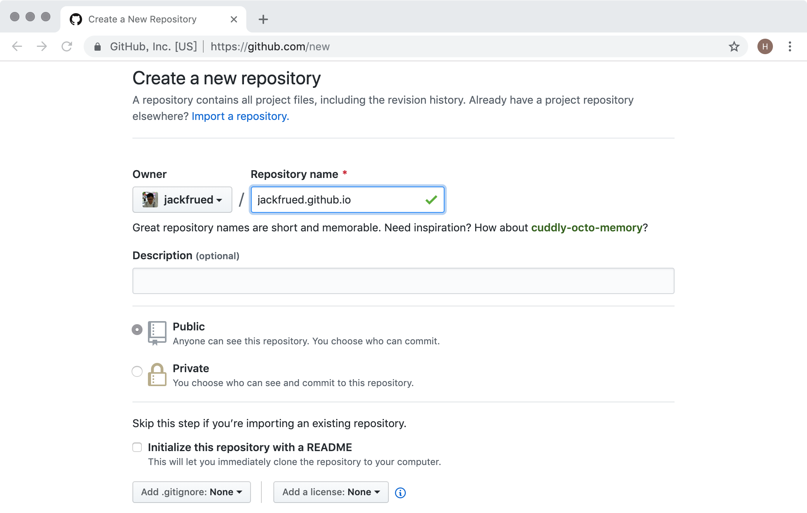
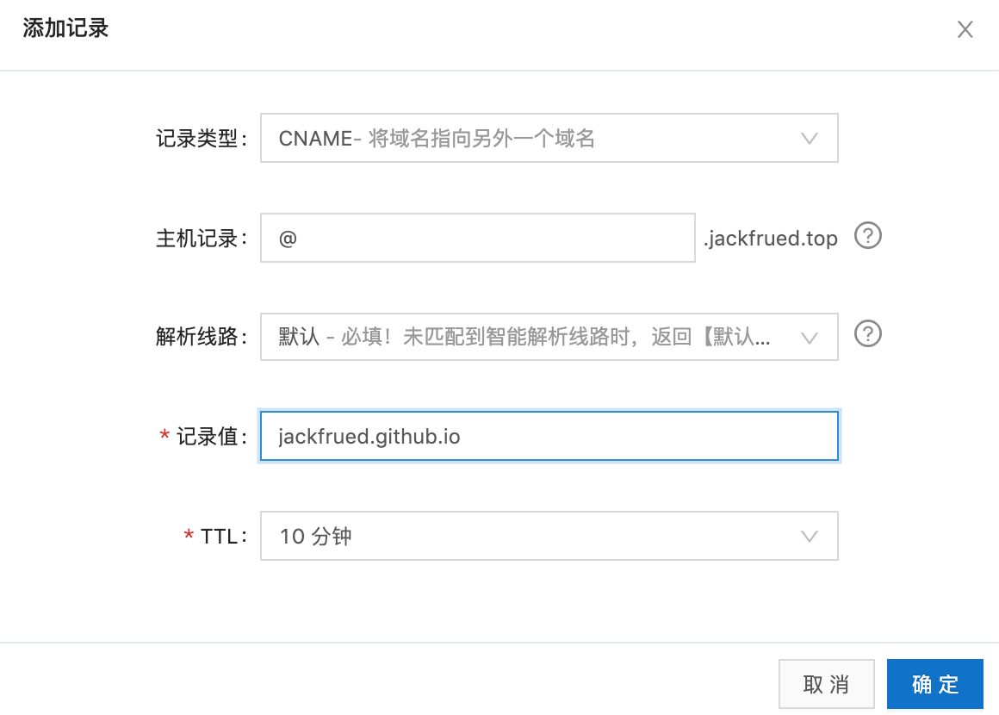

使用Hexo搭建自己的博客
使用Hexo搭建自己的博客¶
对于一个程序员来说，搭建一个属于自己的博客平台是非常有意义的事情。首先，博客可以记录自己的成长历程，也是对自己一段时间学习和工作的总结和沉淀；其他，通过博客可以营销自己，增强自己在互联网或行业内的影响力，为将来更好的职业生涯打一个坚实的基础。前几年有一本名为《软技能 - 代码之外的生存指南》的畅销书，我记得书中有这么一段话：“流行乐队的音乐才华可能并不比夜店驻场乐队高多少，他们为什么就可以在全世界巡回演出，创造一个又一个白金记录？……你的营销做得越好，你的才华才能表现得淋漓尽致。”
这里顺便啰嗦两句，在互联网如此发达的今天，我们应该如何营销自己呢？自我营销首先要从打造个人品牌做起，对于程序员来说，最容易去做好的一件事情还是搭建自己的博客。博客相当于是你在互联网上的一个基地，尤其是当你拥有了属于自己的独立博客后，你可以做很多自己想做的事情，既可以传达自己的思想，又可以提升自己的影响力，当然如果你的博客经营得非常好，你可以从中获利。当然，除了博客，直播、视频网站、投稿、写书、技术活动都是可选的自我营销方式。当然，做自我营销也需要持之以恒，三天打鱼两天晒网是很难有什么收获的。
Hexo概述¶
Hexo是一个快速、简洁且高效的博客框架，它能够将Markdown格式的文档渲染成漂亮的网页，这样我们就可以在很短的时间内迅速的创建出网站的静态内容，而Markdown格式对程序员来说相信并不陌生。要想使用Hexo来搭建自己的博客，我实在想不出有什么教程比官方文档更好，强烈建议大家阅读官方文档来了解Hexo，下面我只做一个简要的使用说明。
说明：Markdown是一种轻量级标记语言，它允许人们使用易读易写的纯文本格式编写文档，同时也对图片、图表、数学公式提供了支持，可以用来书写电子书、软件文档等，同时也可以非常方便的转换为HTML页面或者是PDF文档。
要使用Hexo，首先得确保计算机上已经安装了node.js环境和git环境，前者是一个能够在服务器端运行JavaScript代码的环境，后者是版本控制工具。安装node.js主要是为了使用它的包管理工具npm，所以不需要先系统的学习node.js的知识；而安装git是为了利用版本控制系统克隆代码已经将博客项目托管到三方平台，如果想学习git，最好的资料是官方网站上的Git Pro和《Git权威指南》。安装完成后，我们可以通过下面的命令来确认node.js环境以及它的包管理工具是否安装成功。
可以通过下面的命令来检查是否安装了git环境。
| Bash | |
|---|---|
我们可以使用npm来安装Hexo，npm是node.js的包管理工具，跟Python的pip工具作用一样，可以用它来安装依赖库和三方工具。在第一次使用npm的时候，我们可以先将npm的下载源更换为国内的淘宝镜像，这样下载的速度会有非常显著的提升。
| Bash | |
|---|---|
接下来我们就通过npm来安装Hexo，命令如下所示。
| Bash | |
|---|---|
安装成功后，就可以使用Hexo来创建属于自己的博客啦。
搭建博客¶
说明：以下内容基本上来自于Hexo的官方文档，推荐大家阅读官方文档。
我们先通过下面的命令来创建一个专门保存博客项目的文件夹，该命令会从github上克隆博客项目和默认的主题。
| Bash | |
|---|---|
接下来我们进入这个文件夹并查看目录结构。
说明：Windows环境命令行提示符中可以使用dir命令查看目录结构。需要说明的是：
_config.yml是博客项目的配置文件；package.json是项目的依赖项文件；scaffolds保存了Markdown文件的模板，也就是向新添加的Markdown文件中默认填充的内容；source目录下有一个名为_post的目录，我们稍后可以将编写好的Markdown文件放到该目录，这样就可以利用Hexo将Markdown文件处理成博客的静态页面，生成的静态页面将置于public目录下；themes文件夹保存了博客使用的主题。
然后我们通过下面的命令来安装项目所需的依赖项（package.json文件指明了这些依赖项）。
| Bash | |
|---|---|
做完上述的操作以后，我们已经可以直接通过下面的命令来生成博客。
| Bash | |
|---|---|
该命令也可以缩写为：
| Bash | |
|---|---|
之前我们在安装依赖项的时候包括了一个名为hexo-server的依赖项，该依赖项可以帮助我们启动一个基于node.js的服务器来运行我们的博客项目，使用下面的命令即可启动服务器。
| Bash | |
|---|---|
该命令也可以缩写为：
| Bash | |
|---|---|
| Text Only | |
|---|---|
从运行命令的提示信息可以看到，服务器已经运转起并使用了4000端口，可以通过Ctrl+C来终止服务器的运行。如果要修改服务器使用的端口，可以在启动服务器的时候加上-p参数；如果希望服务器启动后，自动打开默认的浏览器访问服务器，可以使用-o参数，如下所示。
| Bash | |
|---|---|
至此，我们已经可以看到Hexo在没有配置也没有加入自己的Markdown文件下生成的首页，如下图所示。

接下来我们修改博客的配置文件。
| Bash | |
|---|---|
下面是YAML文件中相关选项的说明。
| 参数 | 描述 |
|---|---|
title |
网站的标题 |
subtitle |
网站的副标题 |
description |
网站的描述 |
keywords |
网站的关键词，可以用逗号分隔多个关键词 |
author |
自己的名字 |
language |
网站使用的语言 |
timezone |
网站使用时区，默认使用电脑上设置的时区 |
url |
网址 |
root |
网站根目录 |
source_dir |
资源文件夹，这个文件夹用来存放内容，默认source目录 |
public_dir |
公共文件夹，这个文件夹用于存放生成的站点文件，默认public目录 |
tag_dir |
标签文件夹，默认tags目录 |
archive_dir |
归档文件夹，默认archives目录 |
category_dir |
分类文件夹，默认categories目录 |
auto_spacing |
在中文和英文之间加入空格，默认false |
titlecase |
把标题转换为首字母大写，默认false |
external_link |
在新标签中打开链接，默认true |
relative_link |
把链接改为与根目录的相对位址，默认false |
default_category |
默认分类 |
date_format |
日期格式，默认YYYY-MM-DD |
time_format |
时间格式，默认HH:mm:ss |
per_page |
每页显示的文章数量 ，默认值10，0表示不使用分页 |
pagination_dir |
分页目录，默认为page目录 |
theme |
当前主题名称 |
deploy |
部署部分的设置 |
我们将编写好的Markdown文件可以拷贝到source/_posts目录，我们可以在每个Markdown文件的上方添加Front-matter来对文件的布局、标题、分类、标签、发布日期等信息加以说明。所谓Front-matter，就是每个Markdown文件最上方以---分隔的区域，可以在Front-matter中设置以下内容。
| 参数 | 描述 | 默认值 |
|---|---|---|
layout |
布局 | |
title |
标题 | |
date |
建立日期 | 文件建立日期 |
updated |
更新日期 | 文件更新日期 |
comments |
开启文章的评论功能 | true |
tags |
标签（不适用于分页） | |
categories |
分类（不适用于分页） | |
permalink |
覆盖文章网址 |
例如：
在完成上述工作后，我们可以通过下面的命令先清理之前生成的内容。
| Bash | |
|---|---|
接下来我们就可以用之前讲过的命令重新生成并运行博客项目。
将博客托管到GitHub¶
我们可以利用GitHub网站提供的Pages服务来托管我们的博客。在GitHub Pages的首页上就有一个教程指导我们如何托管自己的网站，当然第一步得在GitHub上注册一个属于自己的账号，登录成功之后才能进行后续的操作。
- 根据自己的用户名创建一个仓库，仓库一定要取名为“用户名.github.io”。例如：我在GitHub上的用户名是jackfrued，那么我的托管博客项目的仓库一定要命名为jackfrued.github.io。

- 修改博客项目的配置文件
_config.yml，配置使用GitHub来部署该博客项目。
| Bash | |
|---|---|
| YAML | |
|---|---|
上面的配置中，type指定了使用git进行项目部署，repo指定了部署项目的git仓库的URL，我们这里使用的是HTTPS的地址，如果之前配置过密钥对也可以使用SSH的地址，branch指定了将代码同步到仓库中的哪一个分支，通常master分支就是发布项目最终工作成果的分支，也称为项目的主分支。
- 安装名为
hexo-deployer-git的部署器插件，通过该插件就能实现一键部署。
| Bash | |
|---|---|
- 可以使用下面的命令来实现一键部署到GitHub。
| Bash | |
|---|---|
或者
| Bash | |
|---|---|
- 接下来在浏览器中输入jackfrued.github.io就能够看到自己的博客，现在全世界的人都可以通过这个URL来访问你的博客。大家是否注意到，访问你博客的这个URL就是刚才我们给仓库起的名字，因为你在GitHub上注册的用户名是独一无二的，所以这个域名也是全世界独一无二的。
将博客绑定到自己的域名¶
虽然我们已经通过GitHub提供的域名访问到了自己的博客，但是如果我们不愿意“寄人篱下”，我们在利用GitHub Pages提供的托管服务同时，也可以将博客绑定到自己专属的域名。如果暂时还没有购买域名，我们可以在提供域名购买服务的网站（如：万网、GoDaddy）上进行购买。
说明：目前国内对域名的管理日趋严格，在购买域名时需要填写一大堆的个人信息，进行实名认证后才能获得域名，这一点相信大家能够理解。
比如说，我现在已经购买了一个名为“jackfrued.top”的域名，如何让它跟“jackfrued.github.io”这个域名做一个绑定呢，我们可以利用阿里云控制台或者DNSPod来做一个域名解析服务。在域名解析平台登录成功后，可以添加或选择自己的域名来配置域名解析。点击“添加记录”按钮，创建一个类型为CNAME的域名解析，CNAME类型的解析代表将一个域名解析到另一个域名，如下图所示。

完成这一步后，还不能马上通过自己的域名访问到博客项目，最后需要在博客项目的source目录下添加一个名为CNAME的文件（请注意这个文件的名字是全大写字母的）。
| Bash | |
|---|---|
编辑该文件的内容，如下所示。
| Text Only | |
|---|---|
可以清理一下之前生成的内容，然后将项目重新生成并发布到GitHub就大功告成了！现在我们已经拥有了独立域名的博客，希望大家可以利用它做些有意义的事情（记录自己的成长历程、分享自己的工作经验、提升个人的影响力）。加油吧，程序员！